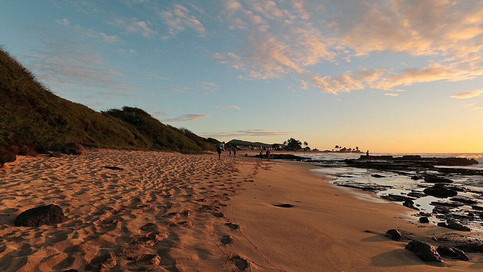

Sandy Beach
Place: Sandy Beach, Ka Iwi Coast, Oʻahu
Type: Beach / cultural landscape / surf and bodyboarding destination
Story it tells: A famous shoreline where modern beach culture overlays older Hawaiian place names, healing traditions, and a long history of fishing and settlement along the Ka Iwi Coast.

Sandy Beach is one of Oʻahu's best-known shorelines, famous for its powerful shorebreak, bodyboarding culture, and broad stretch of golden sand along the Ka Iwi Coast. The area preserves older Hawaiian names and traditions that connect the beach to a much deeper history.
The beach was traditionally known as Wāwāmalu. Earlier sources also record the name as Āwawamalu, commonly translated as "shady valley," though the exact relationship between the two forms is not well documented. Before modern development, this coastline supported Hawaiian fishing and farming communities including agricultural activity and burials within the surrounding dunes.
The Hanauma Bay side of the beach was known as ʻŌkūʻu. The name is associated with a healing stone tradition once found in the area. According to local accounts, people would crouch or kneel near the stone when seeking healing, giving rise to the name and preserving a connection between the landscape and traditional practices.
The modern name emerged during the early twentieth century. Fishermen traveling the coastal trail between Hanauma Bay and Hālona, particularly those fishing for ulua near Bamboo Ridge, referred to the shoreline simply as "Sand Beach" because it stood out from the surrounding rocky coastline. After an access road was built in 1931 and more visitors began arriving, the informal name gradually evolved into the Sandy Beach known today.
Modern Sandy Beach is widely known for bodysurfing and bodyboarding. The beach's steep shorebreak creates powerful waves that have attracted generations of local watermen and helped establish the area as one of Hawaiʻi's most influential bodyboarding locations. The same conditions that make the beach popular also make it one of the most dangerous shorelines on Oʻahu, earning the nickname "Broke Neck Beach".
In recent years, community groups have worked to protect the dunes behind the beach, which contain native coastal vegetation and culturally significant sites. These efforts reflect a broader recognition that Sandy Beach is more than a recreational destination. Beneath the modern name remain older Hawaiian names, stories, and traditions that live on.